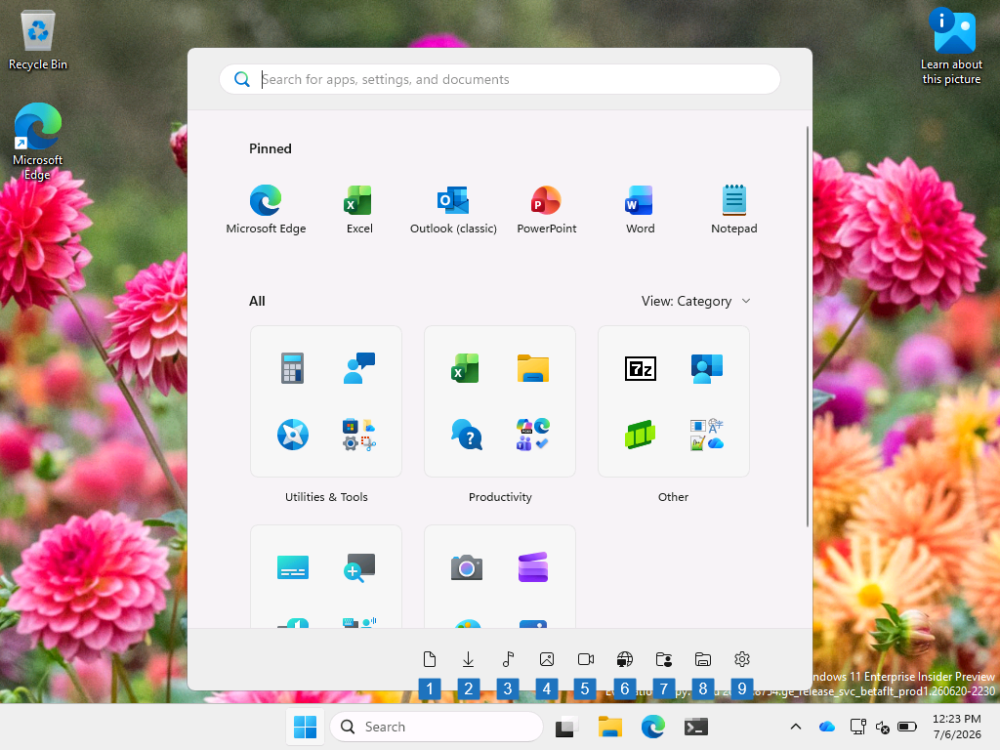
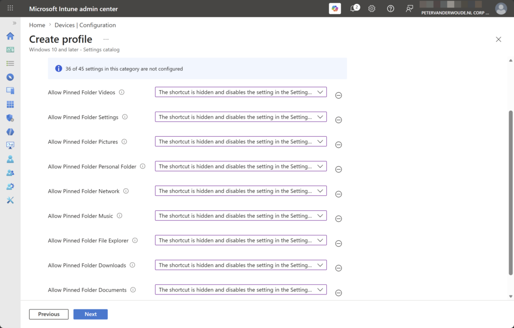
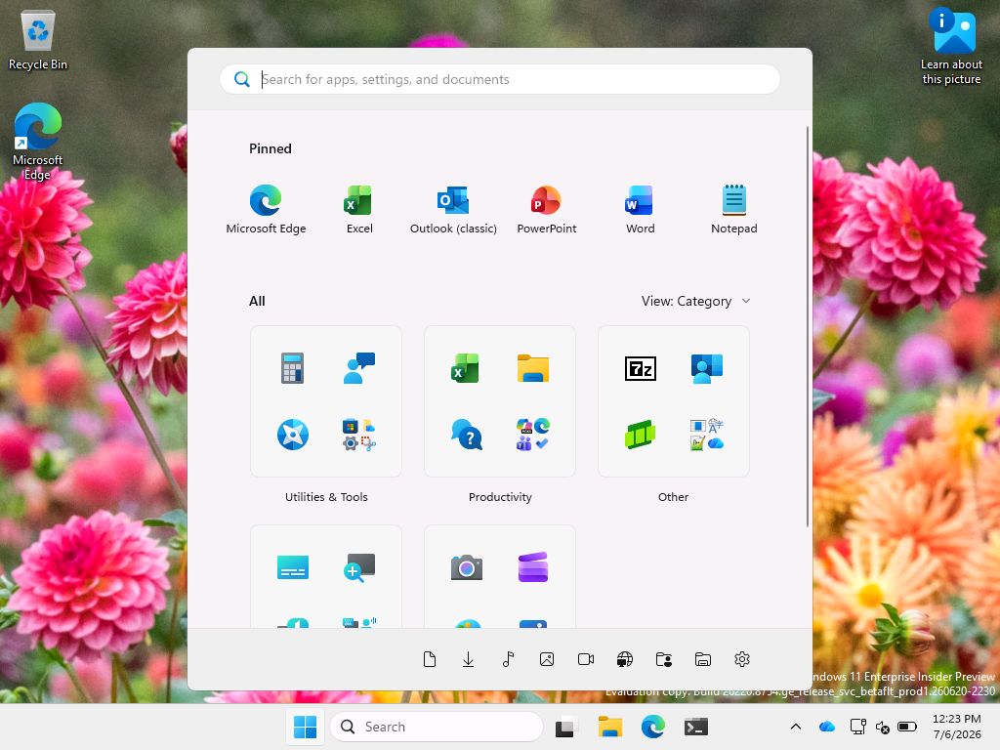
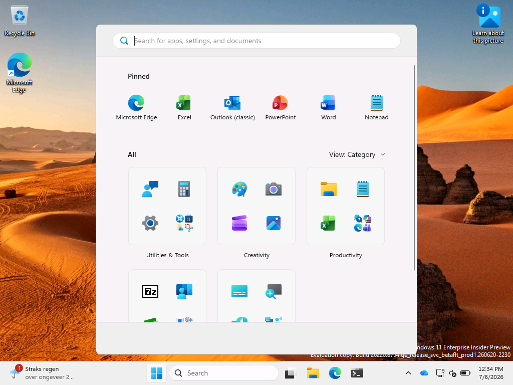

This week is all about customizing the pinned folders in the Start layout, and is a follow-up on this post about customizing the power options in Start layout. Again, it is important to start with that the fact that something is technically possible, does not mean that it should actually be done. In most cases, it should be up to the user to configure in the Start layout whatever they need to be productive. There are, however, cases in which an IT administrator might need to take a bit more control. That can be useful on shared devices, such as kiosk devices and Shared PCs. This post will be another part in the series to go through the different sections of the Start layout, this time about the pinned folders. Those pinned folders are basically referring to all the different pinned folders that can be added to the bottom of the Start layout. This post will start with an overview of the available configuration options, followed with the configuration steps and the user experience.
Introducing the pinned folders configuration options
When looking at customizing the pinned folders in the Start layout, it is all pretty straightforward. All of the optional pinned folders are configurable. Those configurable items are shown on the right in Figure 1, and are referenced in the table below. That table provides an overview of the configuration settings that belong to those configurable items. The numbers with the friendly names, refer to the numbers in the image. That should provide a pretty clear overview of what those configuration settings will actually configure.
The image shows all of the items that are configurable, when discussing the pinned folders. The configuration for the home group folder is no longer applicable to Windows 11. That setting no longer exists and the configuration to pin that folder does not affect the Start layout.
{kind=link}

| Friendly name | Node | Description |
|---|---|---|
| Allow pinned folder Documents (1) | AllowPinnedFolderDocuments | This policy setting can be used to control the visibility of the Documents shortcut on the Start layout. |
| Allow pinned folder Downloads (2) | AllowPinnedFolderDownloads | This policy setting can be used to control the visibility of the Downloads shortcut on the Start layout. |
| Allow pinned folder File Explorer (8) | AllowPinnedFolderFileExplorer | This policy setting can be used to control the visibility of the File Explorer shortcut on the Start layout. |
| Allow pinned folder Music (3) | AllowPinnedFolderMusic | This policy setting can be used to control the visibility of the Music shortcut on the Start layout. |
| Allow pinned folder Network (6) | AllowPinnedFolderNetwork | This policy setting can be used to control the visibility of the Network shortcut on the Start layout. |
| Allow pinned folder Personal Folder (7) | AllowPinnedFolderPersonalFolder | This policy setting can be used to control the visibility of the Personal Folder shortcut on the Start layout. |
| Allow pinned folder Pictures (4) | AllowPinnedFolderPictures | This policy setting can be used to control the visibility of the Pictures shortcut on the Start layout. |
| Allow pinned folder Settings (9) | AllowPinnedFolderSettings | This policy setting can be used to control the visibility of the Settings shortcut on the Start layout. |
| Allow pinned folder Videos (5) | AllowPinnedFolderVideos | This policy setting can be used to control the visibility of the Videos shortcut on the Start layout. |
Configuring the pinned folders in Start layout
When looking at the configuration of the pinned folders, the experience is pretty straightforward. The settings Allow pinned folder Documents, Allow pinned folder Downloads, Allow pinned folder File Explorer, Allow pinned folder Music, Allow pinned folder Network, Allow pinned folder Personal Folder, Allow pinned folder Pictures, Allow pinned folder Settings, and Allow pinned folder Videos, are all MDM-specific settings that are not available via Group Policy. Luckily, the configuration of all of those settings is pretty straightforward via Microsoft Intune, as all settings are available within the Settings Catalog. Even better, all settings are available within the same category in the Settings Catalog. The following eight steps walk through the configuration steps to configure the different power options in Start layout.
- Open the Microsoft Intune admin center portal and navigate to Devices > Windows > Configuration profiles
- On the Windows | Configuration profiles blade, click Create > New Policy
- On the Create a profile blade, select Windows 10 and later > Settings catalog and click Create
- On the Basics page, provide at least a unique name to distinguish it from similar profiles and click Next
- On the Configuration settings page, as shown below in Figure 1, perform the following actions and click Next
- Click Add settings, navigate to Start and select Allow pinned folder Documents, Allow pinned folder Downloads, Allow pinned folder File Explorer, Allow pinned folder Music, Allow pinned folder Network, Allow pinned folder Personal Folder, Allow pinned folder Pictures, Allow pinned folder Settings, and Allow pinned folder Videos in Settings picker
- Configure the appearance of the different pinned folders that are required for the use cases.
{kind=link}

- On the Scope tags page, configure the required scope tags and click Next
- On the Assignments page, configure the assignment for the required user or devices and click Next
- On the Review + create page, verify the configuration and click Create
Note: The policy setting Allow pinned folder Home Group is also available, but no longer applicable to Windows 11.
Experiencing the pinned folders in Start layout
With the different configuration options that where discussed around the power options, the user can be pretty much contained within any required boundaries. Basically, any folder that can possibly be pinned can be configured within the settings. That is shown below in Figure 3 and Figure 4. When no pinned folders are configured, nothing will be shown in the Start layout (as shown in Figure 4). When specific folders are pinned, the Start layout will display those pinned folders (as shown in Figure 3).
{kind=link}

{kind=link}

More information
For more information about managing notifications, refer to the following docs.
Discover more from All about Microsoft Intune
Subscribe to get the latest posts sent to your email.